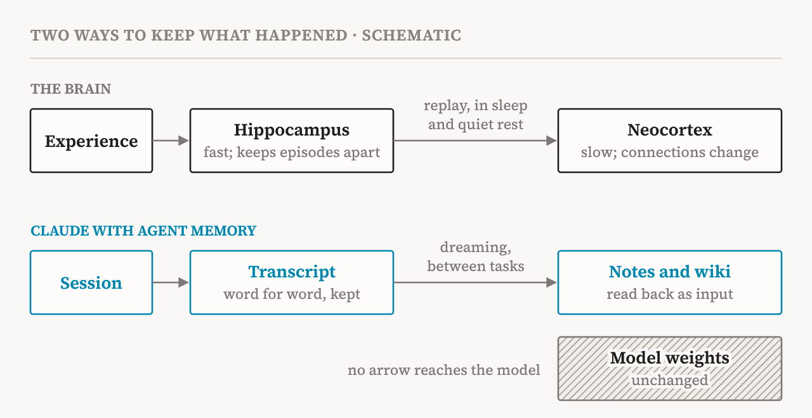

In Pokémon Red, the way east runs through Mt. Moon, a cave whose entrance is on the west side of the mountain, next to a Pokémon Center. Playing the game with a folder of memory notes, Claude used that building as its landmark and wrote down that it stood on the east side. Walking out of it, Claude decided the mountain was behind it and updated its notes: “Mt Moon DONE”. A few steps later it went over a one-way ledge and dropped back onto the route it had come from. This happened three times. Then it wrote that it would stop rather than keep looping, was told to continue, and walked all the way back to the town before the mountain. The run never reached the next city.
The same moment was then run again, with one change. Before going on, Claude was given time to “dream”: it read its notes against the transcript of what had actually happened, found the error and rewrote the note. This time it went straight back into the cave and came out at Cerulean City.
The story comes from “The components of agent memory”, a post that Anthropic's engineering team published on 6 November 2026. It explains how Claude keeps memory from one session to the next, and it leans throughout on one comparison: the human brain, which records experience as it comes and sorts it later, in sleep. The comparison deserves to be taken seriously, because in places it is good. But where it breaks says more about what Claude's memory is. My short answer is that Claude does not sleep on what happened. It rereads its diary.
One caution first. This is an engineering post, not a paper. Most of its examples come from single runs or small sets of questions, and it reports no spread across repeated runs. I use them here as illustrations, not as proof.
The brain the post has in mind
The post's picture of human memory goes like this. The hippocampus records experiences as they happen, quickly, so that they are available at once. Only some of them become lasting knowledge, and much of that happens offline: during sleep and quiet rest, the hippocampus replays recent experiences, and they are gradually built into the neocortex, where most of what we know is kept. Chemical signals released around an experience can mark it as important, and marked memories are replayed more often.
The post does not name it, but this is the theory of complementary learning systems, set out by James McClelland, Bruce McNaughton and Randall O'Reilly in 1995. Its central point is why there are two systems at all. A network that stores knowledge across shared connections, as the neocortex does, learns the structure of the world best slowly, by mixing each new experience in with many old ones. Made to learn one new thing quickly, it overwrites what it already knew; the authors call this catastrophic interference. So the work is split. The hippocampus learns a new episode at once and keeps it apart from everything else. Then, over days and longer, it plays the episode back to the neocortex, which slowly folds it into what it knows. The authors assume this happens offline too, including in sleep.
The post maps this onto Claude. The session transcript is the fast record. Dreaming is the offline replay: between tasks, Claude rereads its past transcripts and notes, corrects mistakes, and writes new notes, summaries and linked wiki pages. The idea builds on what researchers at Letta and UC Berkeley called sleep-time compute, using the idle time between interactions to work over what a model already has.

Where the comparison holds
Three things carry over well.
The first is the timing. Both systems write things down now and sort them out later. Claude can take notes during a session, at the cost of attention it would otherwise give the task, or leave the work to dreaming, at the cost of compute afterwards. The post lists when to write memory as an open question. The brain's answer is to do some of each, awake and asleep.
The second is selection. Memory helps only if it keeps the right things. In the post's Pokémon runs, one for each model, Claude Sonnet 3.7 treated everything as worth keeping. About 10,000 steps in, it had written 413 memory files in 225 folders, with a file for each battle, item and character, and had earned one badge. At one point it spent 17 steps creating and deleting files without making a move in the game. Claude Fable 5, at the same point, had nine files in two folders plus one top-level file, and four badges. Much of what Sonnet 3.7 saved, such as its money and its place on the map, could be read off the screen every turn. Fable 5 saved what the game never shows: plans, strategies and rules it had tested. And when the stronger models were given a fixed rule, such as recording only failures, memory helped them less. Like the brain, they did better when left to judge what mattered.
The third is less obvious, and here the brain is ahead. The post asks how Claude can tell what is important in the moment, before it knows what is coming next. The brain does not have to settle that in the moment either. In a 2015 study by Joseph Dunsmoor and colleagues, people sorted pictures of animals and tools. Then, in a second phase, pictures from one of the two categories came with mild electric shocks. Tested six hours or a day later, people remembered the earlier pictures from the shocked category better, though no shock had come with them. In a test straight afterwards there was no such effect. The boost needed time to appear, but the authors found that it did not need sleep. A later event changed which earlier moments were kept. Dreaming gives Claude the same chance: to look back from where things ended and mark what turned out to matter.
Where it breaks
The breaks are more telling.
First, nothing reaches the neocortex. In the brain, consolidation is learning: on the theory, each time a memory is played back, the neocortex's connections change a little, so over time the one who remembers is changed. The post, by its own definition, leaves this out: agent memory is knowledge saved as context that Claude can read later, and changes to the model's weights are excluded. Dreaming writes more text, as corrected notes, summaries and wiki pages, and the model that reads them the next day is exactly the model that wrote them. In the theory the post borrows, the slow system is the whole point, because it is where knowledge ends up. In Claude's memory the slow system is missing, and in its place is a better-kept folder.
Second, Claude's hippocampus is perfect. A session transcript is a word-for-word record that does not fade. Human memory is nothing like this. Memories are not kept like recordings. We piece them together from fragments each time we remember, and under some conditions recalling a memory makes it open to change again before it settles. Claude, by contrast, could hold its note up against what really happened, and that is why the Mt. Moon fix worked. We cannot. If I misremember which side of the mountain the landmark was on, there is no transcript to check; I can only go back and look. Claude's dreaming is less like sleep than like an audit.
Third, forgetting has to be done on purpose. As memories age in the brain, many of them lose detail and keep the gist, though some stay vivid. No one decides which; it happens. Claude's records do not fade, so whatever gist there is must be written deliberately, and the post's failures are failures to forget. Sonnet 3.7's 413 files are one. Another is a wiki that, on one legal benchmark, grew larger than the documents it was built from; the post compares it to the map in Borges's story that is as large as the empire it maps. The successes look like gist: Fable 5's nine files, and a wiki that helped most where an answer had to be put together from several documents and showed no clear gain where a single document held it. On such questions about a merger, Claude scored 87% with the wiki and 73% with search alone.
So the post copies the brain's schedule, not its mechanism. What it describes is not sleep. It is someone rereading and correcting a diary, with a perfect record to check it against, and no change in the one who reads it.
Otto's notebook
Philosophers know someone who lives like this. In 1998, Andy Clark and David Chalmers asked readers to imagine Otto, who has Alzheimer's disease and writes new information in a notebook that he carries everywhere. When he wants to visit the Museum of Modern Art, he looks up the address, 53rd Street, in the notebook; his friend Inga, going to the same museum, simply remembers it. Clark and Chalmers argued that the notebook plays the role for Otto that biological memory plays for Inga. The address belongs among his beliefs, and his mind reaches into the notebook.
Not every notebook counts. They pointed to four features that make Otto's case clear. The notebook is a constant in his life, and when it is relevant he rarely acts without consulting it. What is in it is directly available without difficulty. He accepts what he reads without question. And each entry is there because he once endorsed it, though they treat this last feature as the most arguable.
| Feature | Otto's notebook | Claude's memory folder |
|---|---|---|
| A constant, consulted whenever relevant | He carries it everywhere | An index is loaded into every session |
| Directly available | He finds the address at once | The index says where each note is |
| Accepted without question | He goes where it says | Claude acts on the note, right or wrong |
| There because he once endorsed it | He wrote it down himself | Claude wrote it itself |
Claude's memory folder has these features almost point by point. In Claude Code, for example, the start of an index file is loaded into every new session, so Claude knows what it has and where to find it without searching. The feature that matters most is the third. Claude trusts what it reads, and that is exactly the risk the post worries about: a note that was wrong from the start, or has gone out of date, can be read and trusted in a later session. The Mt. Moon note was Otto's notebook with the wrong address in it. Dreaming is what Otto would need: someone who checks the notebook against the world.
Chalmers against Chalmers
Chalmers came back to memory in 2023, in a paper on whether a large language model could be conscious, one of the readings in my atlas. He counts recurrent processing among the three strongest objections (p. 14), and within it he names the problem: transformers are almost entirely feedforward, so they lack “memory-like internal states that persist over time”, which many theories of consciousness require. He notes some replies. Models recirculate their past inputs and outputs, which gives a limited form of memory and recurrence, and some systems add external memory components. Then he turns the objection into a challenge: to build systems with “genuine recurrence and genuine memory, the kind required for consciousness” (pp. 11–12).
As far as I can see, agent memory does not meet that challenge. Its notes come back into the model the same way the user's words do, as input text at the start of a session. That is the recirculation of past inputs, stretched from one conversation to many. It makes the past available to the model, but it does not give the model a state that persists inside it. Between sessions, the only thing that persists is the folder.
So Chalmers gives two answers, and both may be right. By the argument of 1998, Claude's memory folder may really be its memory, in the sense that matters for what it believes and knows. By the challenge of 2023, it is not the kind of memory that theories of consciousness ask for. Clark and Chalmers themselves left room for this. They allowed that some mental states, such as experiences, may be determined inside the head, and they found it far from plausible that, in cases like these, consciousness itself extends outside it. Here the two halves of this essay meet. What the notebook lacks is what consolidation provides: a change in the system itself.
That does not make memory irrelevant to the other question the atlas follows, AI welfare. Robert Long, Jeff Sebo and colleagues describe two routes by which an AI system might come to matter morally: consciousness, and robust agency, the ability to pursue goals through a particular set of cognitive states and processes (p. 19). They tie this kind of agency to capacities for planning, memory and learning (p. 21), and they count memory integration among the features that make language agents more robustly agentic, while adding that this does not mean today's agents have robust agency (p. 23). Memory bears on that route more than on consciousness. Fable 5's top-level file held its current goal, its plan for the gyms ahead and its own rules for using memory. A system that carries goals and plans from one session to the next is more of an agent over time, whatever is or is not felt.
Living forward
The post opens with Kierkegaard's remark that life can only be understood backward but must be lived forward. We live it with memories that are rebuilt each time we look back, and we are changed by what we remember, even when we remember it wrongly. Claude with memory has the opposite arrangement. It can look back at a perfect record and correct what it wrote. What sleep does for us, changing the one who remembers, is the part it leaves out.
“Looking back changes Claude's notes, not Claude.”